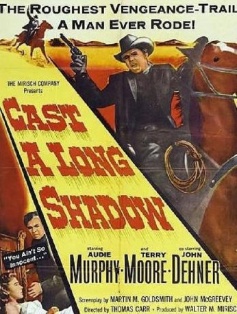
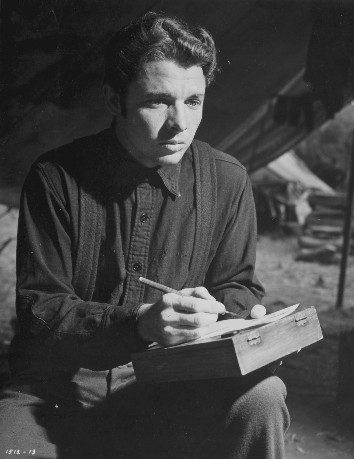

#3520 Kampf ohne Gnade
Alternativ: Cast a Long Shadow
 
 IMDB-Wertung: 6.0 / 10
IMDB-Wertung: 6.0 / 10  Metascore: 0
Metascore: 0 
Der ehemalige Stalljunge Matt Brown (Audie Murphy) erbt von seinem Vater, zu dem er keinerlei Kontakt hatte, eine Ranch. Die wird von einer Gruppe Religionsfanatiker bewirtschaftet, die die Farm übernehmen wollen. Matt lehnt jedoch ab und übernimmt selbst die Leitung der Ranch. Doch der unerfahrene Junge muss noch einiges lernen. - Kleiner, aber feiner Schwarzweiß-Western mit Genre-Ikone Audie Murphy.
Jahr: 1959
Dauer: 79 Minuten
FSK:
Land: USA Studio: United ArtistsTonspuren: DD5.1 - ,
Untertitel:
Auflösung: 1080p (1440x1080) Größe: 2662 MB
Genre: Western
Regisseur: Thomas Carr
Drehbuch: Gary Scott Thompson
Soundtrack:
Darsteller:
-  Audie Murphy als Matt Brown
- Terry Moore als Janet Calvert
 John Dehner als Chip Donohue
John Dehner als Chip Donohue James Best als Sam Mullen
James Best als Sam Mullen Denver Pyle als Preacher Harrison
Denver Pyle als Preacher Harrison Ann Doran als Charlotte Calvert
Ann Doran als Charlotte Calvert Stacy Harris als Eph Brown
Stacy Harris als Eph Brown Robert Foulk als Hugh Rigdon
Robert Foulk als Hugh Rigdon Kermit Maynard als Barfly , uncredited
Kermit Maynard als Barfly , uncredited- Rita Lynn als Hortensia
- Wright King als Noah Pringle
- Jimmie Booth als Trail Cook , uncredited
- Claire Carleton als Saloon Girl at Poker Game , uncredited
- Mason Alan Dinehart als Dick Calvert , uncredited
- Joe Ferrante als Townsman , uncredited
- Terry Frost als Wade , uncredited
 Nacho Galindo als Hotel Keeper , uncredited
Nacho Galindo als Hotel Keeper , uncredited- Jonathan Hole als Charlie Boles , uncredited
- Dick Johnstone als Barfly , uncredited
- Ray Jones als Townsman at Barbeque , uncredited
- Ann Kunde als Townswoman , uncredited
- Joe Patridge als Ken Calvert , uncredited
 Jack Perrin als Townsman , uncredited
Jack Perrin als Townsman , uncredited- Bob Reeves als Barfly , uncredited
 Buddy Roosevelt als Townsman , uncredited
Buddy Roosevelt als Townsman , uncredited- Rudy Sooter als Townsman at Barbeque , uncredited
 Dale Van Sickel als Poker Player , uncredited
Dale Van Sickel als Poker Player , uncredited- Rusty Wescoatt als Townsman , uncredited
Datei: X:\HD-Western-1900-1959\Kampf ohne Gnade (1959, FSK, 1440x1080).mkv seit 23.04.2016
Festplatte: HD Eastern+Western
 Es gibt insgesamt 98 Filme in der Gruppe 'HD-Western-1900-1959'
Es gibt insgesamt 98 Filme in der Gruppe 'HD-Western-1900-1959'